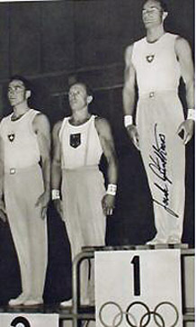

Jack Gunthard (SUI)
1952 Olympic Games HB Gold Medalist

Medal Total
Olympic Games: 1
Gold, 1 Silver
World Championships: 1 Bronze
European Championships: 2 Gold
Gunthard was born on January 8, 1920, and began gymnastics at age 7. After his retirement, in 1958, he became the coach for the Italian men's national gymnastics team, a post which he held until 1965. He returned to Switzerland to coach the men's national team until 1985. He was inducted into the International Gymnastics Hall of Fame in 1997.
Competition Results
1949
SUI-HUN Dual Meet: 1st Team, 7th AA
1950
World Championships: 1st Team
1952
Olympic Games: 2nd Team, 17th AA, 1st HB
1954
International Meet in Paris: 1st AA
World Championships: 3rd Team, 12th AA, 6th PH
1955
European Championships: 11th AA
1956
CSSR-SUI Dual Meet: 2nd Team, 2nd AA
SUI Championships: 1st AA
1957
European Championships: 4th AA, 1st PB, 1st HB, 6th R
SUI Championships: 1st AA
1958
SUI Championships: 1st AA
This page was created on September
08, 2006 and was last updated on October 31, 2024.
© Gymn Forum